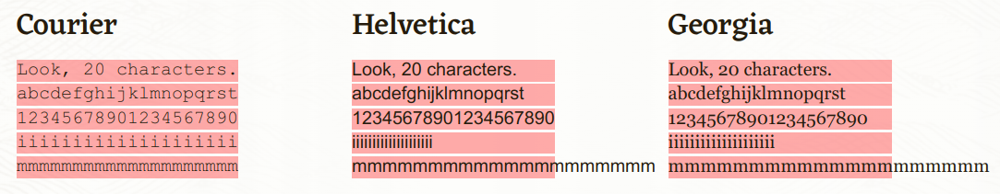

Many CSS properties like width, margin, padding, and font-size take a length, and CSS has many different ways to express length.
In CSS, length is a number an a unit with no whitespace. For example, 5px, 0.9em, and so on.
There are two general kinds of units used for length and size in CSS: absolute and relative.
Absolute length units are based on an actual physical unit, and are generally considered to be the same size across devices. However, depending on your screen size and quality, or settings in your browser or OS, there may be some exceptions.
Here are some common absolute length units in CSS:
Pixels, or px, are one of the most common length units in CSS.
In CSS, 1 pixel is formally definedas 1/96 of an inch. All other absolute length units are based on this definition of a pixel.
But when that standard was originally formulated, most monitors had a resolution of 1024 x 768, and a DPI (dots per inch) of 96.
Screens on modern devices have much higher resolutions and DPIs, so a line that's 96 pixels long may not measure exactly 1 inch, depending on the device.
Even though sizing in pixels can vary across devices, it's generally considered better to use pixels for screens.
If you know that your page will be printed on a high quality printer, then you may consider using another unit like cm or mm.
You can read more about the history of the pixel unit and why a CSS inch doesn't always match a physical inch in this article.
Centimeters.
In CSS, 1cm is roughly 37.8 pixels, or about 25.2/64 of an inch.
In CSS, 1mm is roughly 3.78 pixels, or 1/10th of a centimeter.
Inches.
In CSS, 1in is roughly 96 pixels, or about 2.54cm.
Points.
CSS, 1pt is roughly 1.3333 pixels, or 1/72th of an inch.
Picas.
CSS, 1pc is roughly 16 pixels, or 1/6 of an inch.
Relative length units are relative to another element's size or settings. For example, the relative font size of an element may be calculated using the parent element's font size.
Here are some common relative length units:
The CSS em unit gets its name from a typographical unit. In typography, the term em "was originally a reference to the width of the capital M in the typeface and size being used".
When used with the font-size property, em inherits the font-size from its parent element:
.container { font-size: 16px; } .container p { font-size: 1em; } .container h2 { font-size: 3em; } .container h3 { font-size: 2em; }
In this example, the font-size of p is 16px (16 1). Meanwhile, the font-size of h2 is 48px (16 3), and 32px for the h3 (16 * 2).
If em is used with another property like width, em is calculated using the size of the targeted element.
Root em. This relative unit is not affected by the size or setting of a parent element, and is instead based on the root of the document. For websites, the root of the document is the html element.
p { font-size: 1.25rem; }
In most browsers, the default font size is 16, so the font-size of html elements is 16px. So in this case, p is 20px (16 * 1.25).
But if a user changes their browser's default font size, then the font-size of p will scale up or down accordingly.
Percentages, or the percent size relative to the parent's size:
div { width: 400px; } div p { width: 75%; }
Since the parent’s width is 400px, the width of the inner paragraph is be 300px (400 * .75).
View width. 1vw is 1% of the width of the viewport.
For example:
body { width: 100vw; }
Since the body element is set to 100vw, or 100% of the viewport's width, it will take up the full width available to it. So if you resize your browser to 690 pixels wide, then the body will take up all 690 pixels in width.
View height. 1vh is 1% of the height of the viewport.
For example:
div { height: 50vh; }
The div will fill 50% of the viewport's height. So if the browser window is 900 pixels high, the height of the div will be 450 pixels.
The CSS ex unit gets its name from x-height in typography, or "height of the letter x in the font ". In many fonts, the lowercase x character is usually about half the height of the largest character.
.webp)
In CSS, 1ex is the x-height of the font, or half of 1em.
But since the size of the lowercase x character can vary significantly based on the font, the CSS ex unit is rarely used.
Character unit. The CSS ch unit is defined as the width of the character 0 (zero, or U+0030) of the font.
While the ch unit works as an exact measurement for monospaced / fixed width fonts like Courier, it can be unpredictable with proportional fonts like Arial.
For example, if your font is Courier and you set an element's width to 60ch, that element will be 60 exactly 60 characters wide.
But if your font is Arial and you set an element's width to 60ch there's no telling how wide the element will be – characters may overflow the container, or fall short.

Check out this article for an in-depth explanation of the ch unit, and to see some examples.
Viewport minimum (vmin) and viewport maximum (vmax) units are based on the values of vw and vh.
1vmin is 1% of the viewport's smallest dimension, and 1vmax is 1% of the viewports largest dimension.
For example, imagine a browser window that is 1200 pixels wide and 600 pixels high. In this case, 1vmin is 6px (1% of vh, which is smaller at 600 pixels). Meanwhile, 1vmax is 12px (1% of vh, which is the larger value at 1200 pixels).
If you read this far, thank the author to show them you care. Say Thanks
Learn to code for free. freeCodeCamp's open source curriculum has helped more than 40,000 people get jobs as developers. Get started